Tema 3 Preparación del Ambiente de Trabajo
El primer paso para comenzar nuestro camino de programación web es preparando nuestro ambiente de trabajo. Para esto necesitaremos sólo dos cosas: un navegador y un editor de texto. El navegador nos servirá para poder visualizar nuestro progreso en tiempo real, y el editor nos servirá para poder editar nuestro código de manera rápida y eficiente.
El editor de texto que utilizaremos es Visual Studio Code. Haz
clic  en la liga para ir a la
página de descarga. Asegúrate de realizar la
instalación correcta de acuerdo a las
especificaciones y sistema operativo de tu
computadora.
en la liga para ir a la
página de descarga. Asegúrate de realizar la
instalación correcta de acuerdo a las
especificaciones y sistema operativo de tu
computadora.
VS Code es de los editores de texto más populares en la industria, y nos permite crear archivos de todo tipo. En este curso nos enfocaremos en archivos con extensión .html, .css y .js. Este editor nos permite modificar fácilmente este tipo de archivos y nos brinda una gran cantidad de herramientas y atajos para escribir código eficientemente.
A continuación hay un pequeño tutorial para que te
familiarices con Visual Studio Code.
Haz clic en las flechas a los
lados ( < y > ) para navegar por los diferentes pasos.
¡Comencemos! Al abrirlo por primera vez, verás algo así:
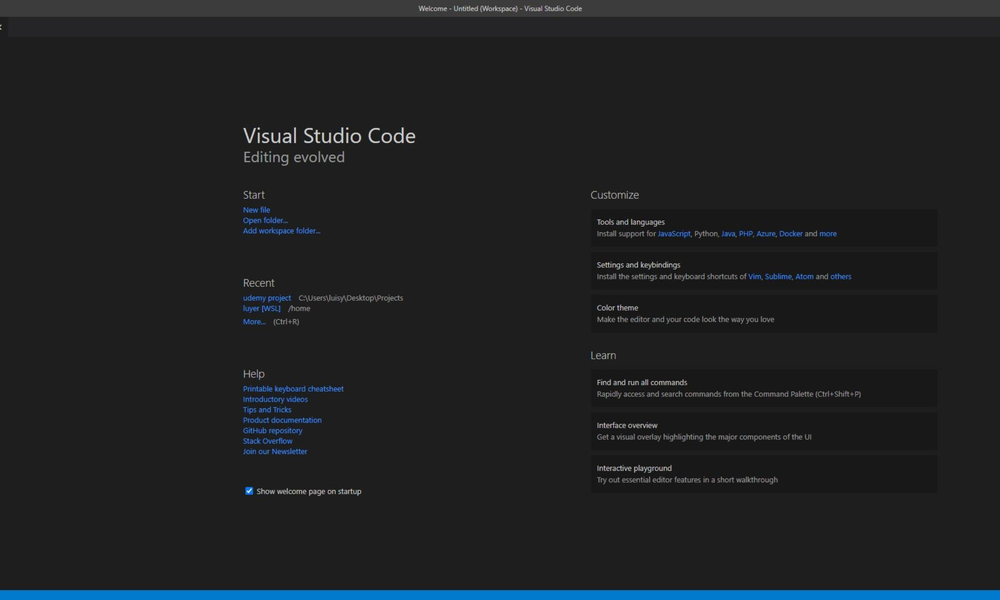
En la barra de la izquierda, haz clic en el
último ícono, te llevará al buscador de extensiones.
Las
extensiones son herramientas adicionales que podemos instalar en
nuestro editor.
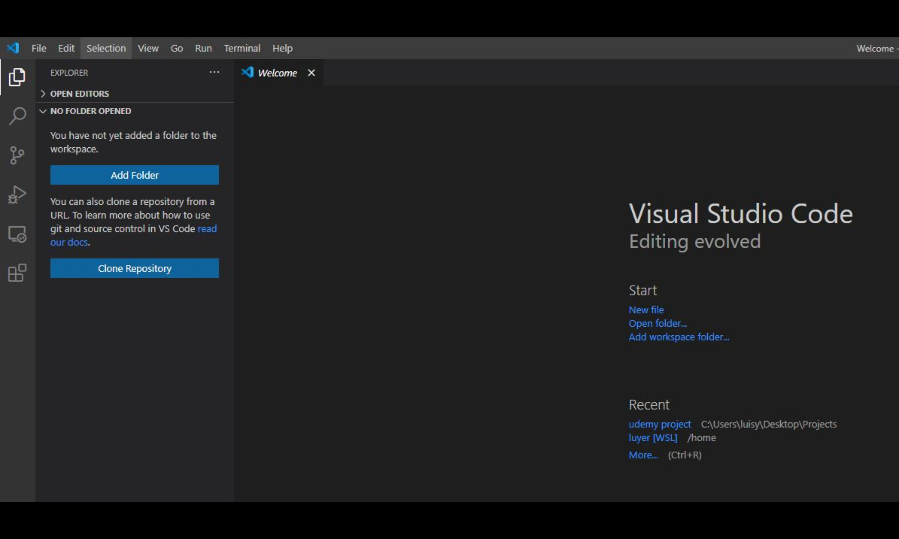
Haz clic en la
barra de búsqueda y escribe "live server".
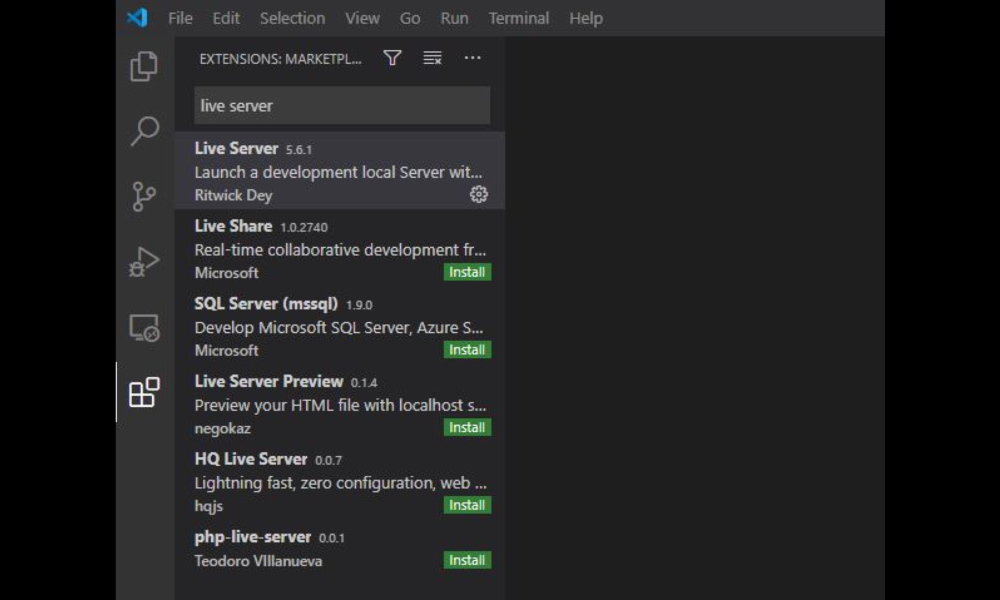
Hacemos clic en
el botón de Install de la primera opción de los resultados.
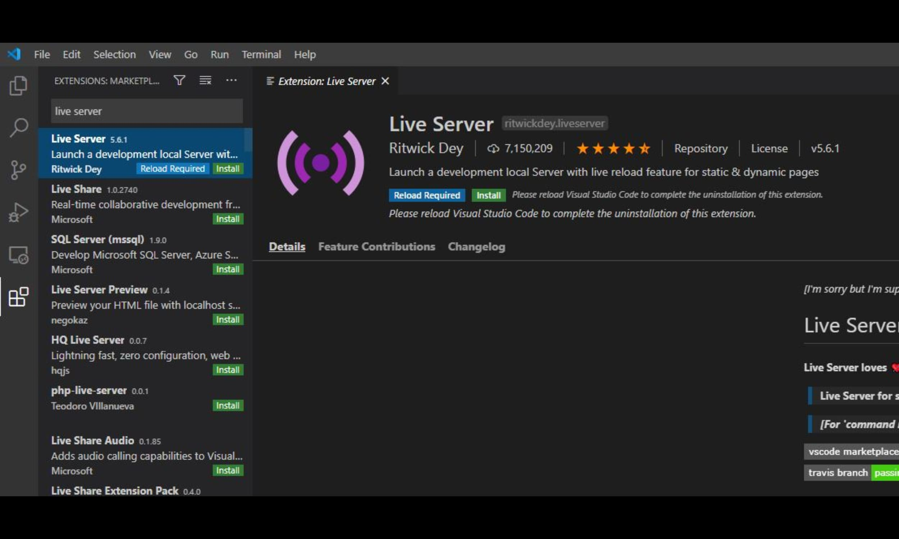
Una vez instalada nuestra extensión, debemos
crear nuestro espacio de trabajo.
En la barra de la izquierda
hacemos clic en el primer ícono.
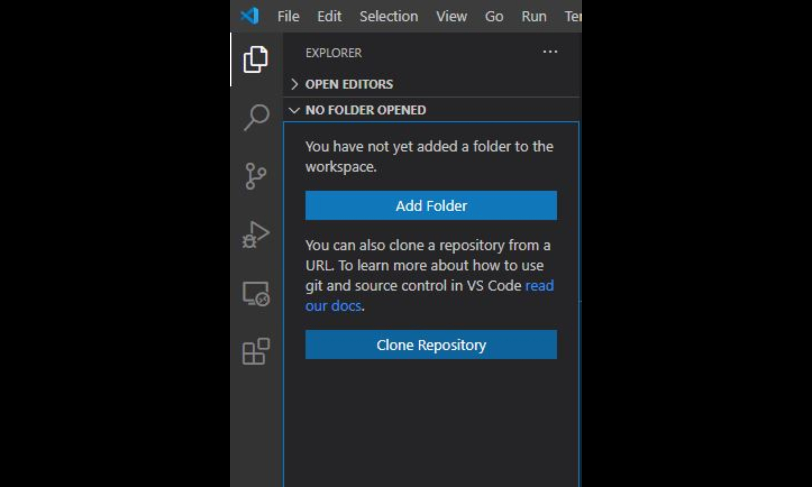
Después hacemos clic en el
botón de "Add Folder" para agregar una carpeta de trabajo en nuestra
computadora.
Crea un nuevo folder con el nombre
"PrimerProyectoWeb", selecciónalo, y haz clic en el
botón de agregar.
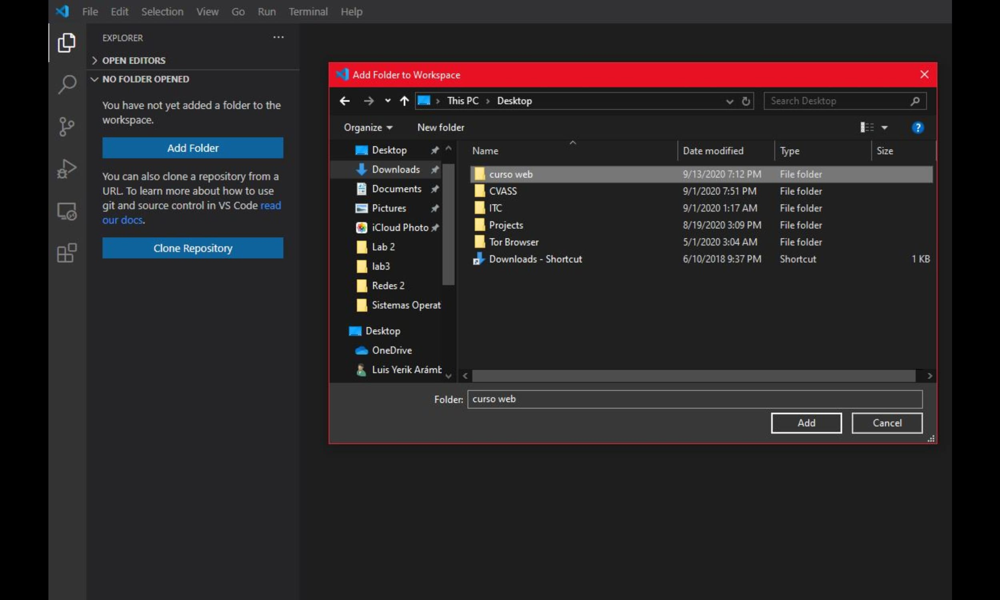
Una vez creada la carpeta, hacemos clic el
primer ícono del explorador de archivos
para agregar un nuevo
archivo a nuestro espacio de trabajo.
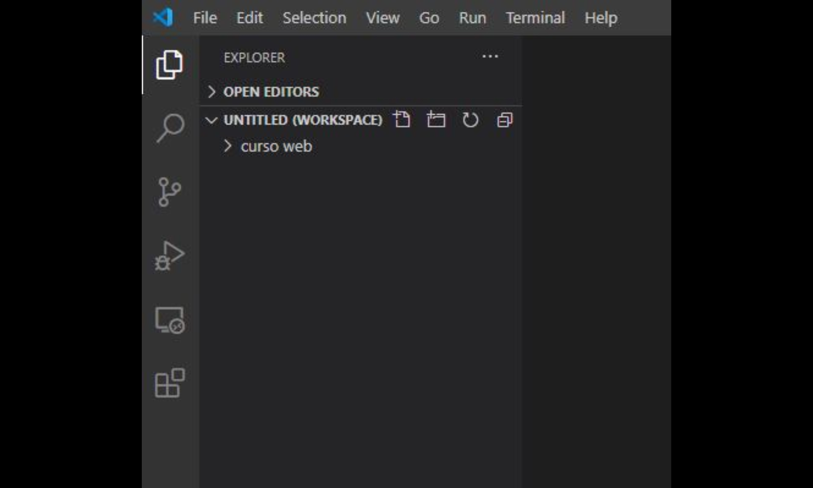
Nombramos al acrhivo "index.html".
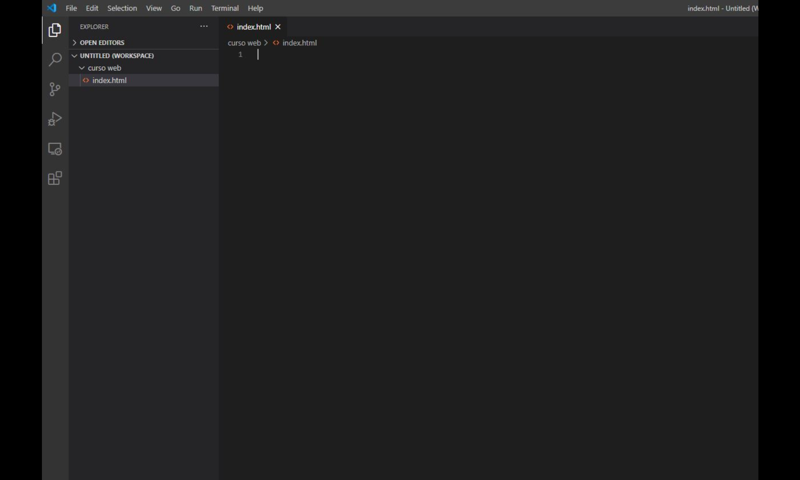
Escribimos en el archivo un signo de admiración ! y presionamos ENTER cuando aparezca un menú desplegable debajo del cursor.
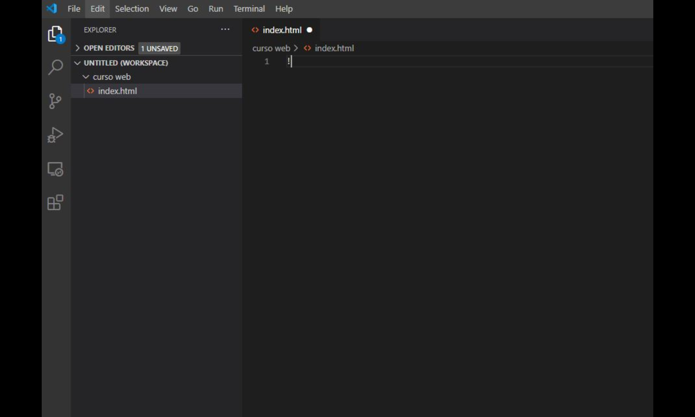
El ! es un atajo para agregar todo lo
necesario de un documento HTML; revisaremos a detalle cada elemento
del archivo más adelante.
En la sección de body
escribimos algún mensaje como "¡Hola! Esta es mi primer página web".
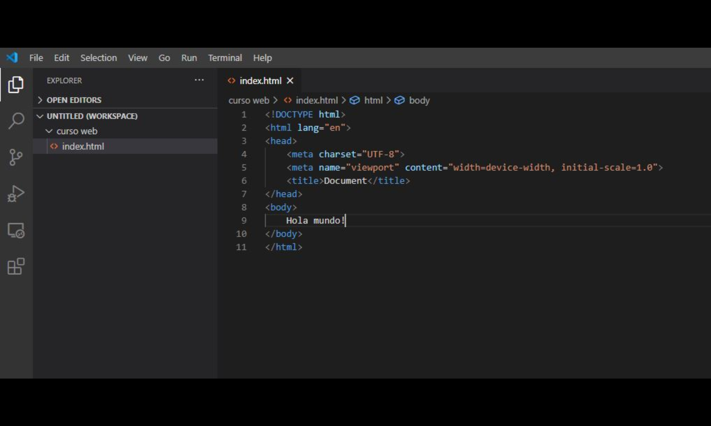
En la barra inferior derecha de VS Code, haz
clic en
el botón "Go Live".
(Esto iniciará un servidor local en
tu máquina para mostrar las páginas de tu sitio web en tu
navegador.)
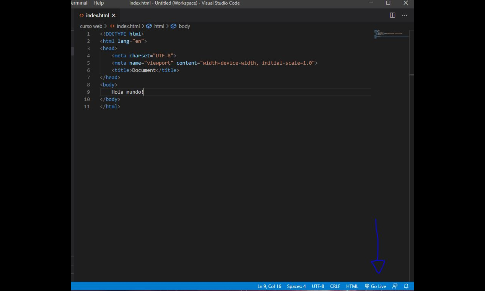
La extensión de Live Server abrirá
automáticamente una pestaña en tu navegador predeterminado con tu
página web.
¡Felicidades! Has creado tu primera página web.
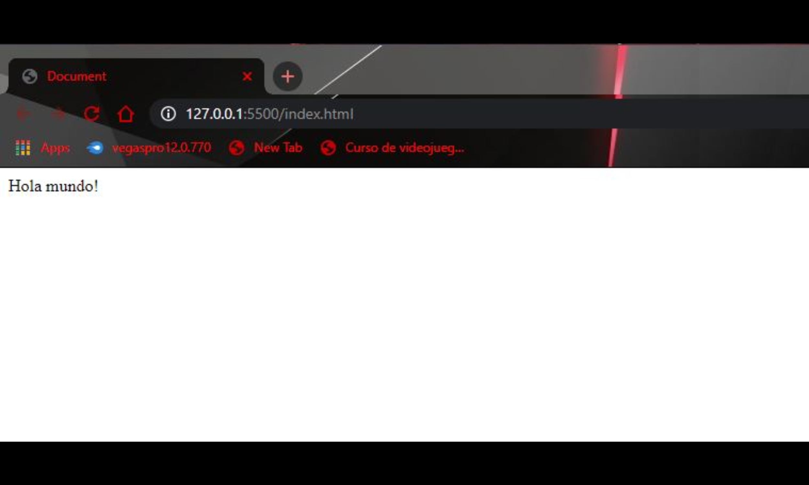